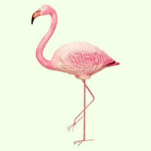
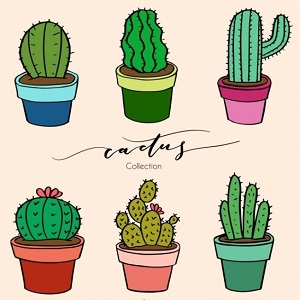
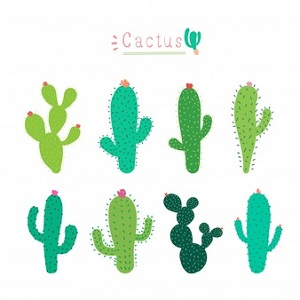
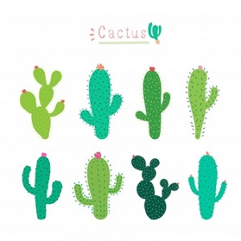

TRENDS 2019

FLAMINGO

CACTUS
UNICORN
The name "flamingo" comes from "flame-colored"
JUNE 14, 2018
BIRDS
COMMENTS (1)
245
Flamingos or flamingoes /fləˈmɪŋɡoʊz/ are a type of wading bird in the family Phoenicopteridae, the only bird family in the order Phoenicopteriformes. Four flamingo species are distributed throughout the Americas, including the Caribbean, and two species are native to Africa, Asia, and Europe.
The name "flamingo" comes from Portuguese or Spanish flamengo, "flame-colored", in turn coming from Provençal flamenc from flama "flame" and Germanic-like suffix -ing, with a possible influence of the Spanish ethnonym flamenco "Fleming" or "Flemish". The generic name phoenicopterus (from Greek: φοινικόπτερος phoinikopteros), literally "blood red-feathered" has a similar etymology.
The greater flamingo is the tallest of the six different species of flamingos, standing at 3.9 to 4.7 feet (1.2 to 1.4 m) with a weight up to 7.7 pounds (3.5 kg), and the shortest flamingo species (the lesser) has a height of 2.6 feet (0.8 m) and weighs 5.5 pounds (2.5 kg). Flamingos can have a wingspan as small as 37 inches (94 cm) to as big as 59 inches (150 cm).
CONTINUE READINGFREE HUGS
OCTOBER 8, 2019
PLANTS
COMMENTS (3)
311
A cactus (plural: cacti, cactuses, or less commonly, cactus) is a member of the plant family Cactaceae, a family comprising about 127 genera with some 1750 known species of the order Caryophyllales. The word "cactus" derives, through Latin, from the Ancient Greek κάκτος, kaktos, a name originally used by Theophrastus for a spiny plant whose identity is not certain.
 

Cacti occur in a wide range of shapes and sizes. Most cacti live in habitats subject to at least some drought. Many live in extremely dry environments, even being found in the Atacama Desert, one of the driest places on earth. Cacti show many adaptations to conserve water. Almost all cacti are succulents, meaning they have thickened, fleshy parts adapted to store water. Unlike many other succulents, the stem is the only part of most cacti where this vital process takes place.
Most species of cacti have lost true leaves, retaining only spines, which are highly modified leaves. As well as defending against herbivores, spines help prevent water loss by reducing air flow close to the cactus and providing some shade. In the absence of leaves, enlarged stems carry out photosynthesis. Cacti are native to the Americas, ranging from Patagonia in the south to parts of western Canada in the north—except for Rhipsalis baccifera, which also grows in Africa and Sri Lanka.
CONTINUE READINGThe unicorn is a legendary creature
APRIL 25, 2019
LEGENDS
COMMENTS (5)
277
The unicorn is a legendary creature that has been described since antiquity as a beast with a single large, pointed, spiraling horn projecting from its forehead. The unicorn was depicted in ancient seals of the Indus Valley Civilization and was mentioned by the ancient Greeks in accounts of natural history by various writers, including Ctesias, Strabo, Pliny the Younger, Aelian and Cosmas Indicopleustes. The Bible also describes an animal, the re'em, which some versions translate as unicorn.

In European folklore, the unicorn is often depicted as a white horse-like or goat-like animal with a long horn and cloven hooves (sometimes a goat's beard). In the Middle Ages and Renaissance, it was commonly described as an extremely wild woodland creature, a symbol of purity and grace, which could be captured only by a virgin. In the encyclopedias, its horn was said to have the power to render poisoned water potable and to heal sickness. In medieval and Renaissance times, the tusk of the narwhal was sometimes sold as unicorn horn.
The unicorn continues to hold a place in popular culture. It is often used as a symbol of fantasy or rarity.
CONTINUE READING